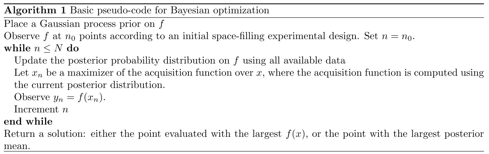
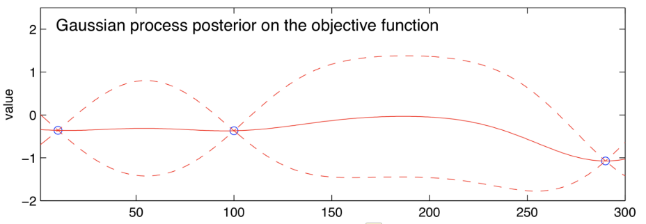

贝叶斯优化
贝叶斯优化简介
贝叶斯优化（BayesOpt）是一种及其学习优化方法，用来解决黑盒无衍生全局优化（black-box derivative-free global optimization）问题，即函数只知道输入和输出，不知道其中的结构和具体函数形式，也没法求导。
max x ∈ A f ( x ) \max_{x\in A}f(x)
x ∈ A max f ( x )
参考[1] P. I. Frazier, “A Tutorial on Bayesian Optimization,” Jul. 2018, Accessed: Oct. 13, 2021. [Online]. Available: https://arxiv.org/abs/1807.02811v1 .
可行域和函数具有以下性质：
x ∈ R d x\in \mathbb{R}^d x ∈ R d d ≤ 20 d\leq 20 d ≤ 20 可行域是一个简单集合，其中元素效果，也就是对应的函数值很容易评估。例如：x ∈ R d : a i ≤ x i ≤ b i {x\in \mathbb R^d:a_i\leq x_i\leq b_i} x ∈ R d : a i ≤ x i ≤ b i d d d x ∈ R d : ∑ i x i = 1 {x\in\mathbb R^d:\sum_i x_i=1} x ∈ R d : ∑ i x i = 1
目标函数连续，因为优化过程要用高斯回归。
f f f f f f f f f 对于x x x f ( x ) f(x) f ( x ) 不可求导性 。
f f f 目标是寻找全局最优解而不是局部最优解。
贝叶斯优化的基本思路
贝叶斯优化主要包含两部分，统计推理的方法 和获取函数 。统计推理的方法用来获取后验概率，获取函数用来基于后验概率来寻找下一个最优点。
主要思路为：
假定有了一些目标函数的输入和对应的输出（采样值），先对目标函数进行高斯过程先验，用高斯回归对对这些数据进行拟合。
在已有的采样数据上更新对f f f
根据后验概率分布，构建获取函数，寻找获取函数最大的点，作为下一个最优解。
重复2-3过程，记录其中函数值最大的那个点作为全局最优解。

最常用的统计推理方法是高斯回归（GP Regression），最常用的获取函数为Expected Improvement（EI）。
高斯回归
给定一组采样序列
[ ( x 1 , f ( x 1 ) , ( x 2 , f ( x 2 ) , ⋯ , ( x n , f ( x n ) ] [(x_1,f(x_1),(x_2,f(x_2),\cdots,(x_n,f(x_n)]
[( x 1 , f ( x 1 ) , ( x 2 , f ( x 2 ) , ⋯ , ( x n , f ( x n )]
利用高斯回归获得的先验概率分布为
f ( x 1 : k ) ∼ Normal ( μ 0 ( x 1 : k ) , Σ 0 ( x 1 : k , x 1 , k ) ) f(x_{1:k})\sim \text{Normal}(\mu_0(x_{1:k}),\Sigma_0(x_{1:k},x_{1,k}))
f ( x 1 : k ) ∼ Normal ( μ 0 ( x 1 : k ) , Σ 0 ( x 1 : k , x 1 , k ))
其中x 1 : k x_{1:k} x 1 : k x 1 , x 2 , x 3 , ⋯ , x n x_1, x_2, x_3, \cdots, x_n x 1 , x 2 , x 3 , ⋯ , x n μ ( ⋅ ) \mu(\cdot) μ ( ⋅ ) Σ 0 ( ⋅ , ⋅ ) \Sigma_0(\cdot,\cdot) Σ 0 ( ⋅ , ⋅ )
f ( x 1 : k ) = [ f ( x 1 ) , f ( x 2 ) , f ( x 3 ) , ⋯ , f ( x n ) ] f(x_{1:k})=[f(x_1),f(x_2),f(x_3),\cdots,f(x_n)] f ( x 1 : k ) = [ f ( x 1 ) , f ( x 2 ) , f ( x 3 ) , ⋯ , f ( x n )]
μ 0 ( x 1 : k ) = [ μ 0 ( x 1 ) , μ 0 ( x 2 ) , ⋯ , μ 0 ( x n ) ] \mu_0(x_{1:k})=[\mu_0(x_1),\mu_0(x_2),\cdots,\mu_0(x_n)] μ 0 ( x 1 : k ) = [ μ 0 ( x 1 ) , μ 0 ( x 2 ) , ⋯ , μ 0 ( x n )]
Σ 0 ( x 1 : k , x 1 : k ) = [ Σ 0 ( x 1 , x 1 ) , . . . , Σ 0 ( x 1 , x k ) ; . . . ; Σ 0 ( x k , x 1 ) , . . . , Σ 0 ( x k , x k ) ] \Sigma_0(x_{1:k},x_{1:k})=[\Sigma_0(x_1, x_1), . . . , \Sigma_0(x_1, x_k); . . . ; \Sigma_0(x_k, x_1), . . . , \Sigma_0(x_k, x_k)] Σ 0 ( x 1 : k , x 1 : k ) = [ Σ 0 ( x 1 , x 1 ) , ... , Σ 0 ( x 1 , x k ) ; ... ; Σ 0 ( x k , x 1 ) , ... , Σ 0 ( x k , x k )]
常用的均值函数为μ 0 ( x ) = μ \mu_0(x)=\mu μ 0 ( x ) = μ f f f
μ 0 ( x ) = μ + ∑ i = 1 p β i Ψ i ( x ) \mu_0(x)=\mu+\sum_{i=1}^p\beta_i\Psi_i(x)
μ 0 ( x ) = μ + i = 1 ∑ p β i Ψ i ( x )
其中Ψ i \Psi_i Ψ i x x x
常用的协方差函数为power exponential kernal和Matérn kernal.
power exponential kernal
Σ 0 ( x , x ′ ) = α 0 exp ( − ∣ ∣ x − x ′ ∣ ∣ 2 ) \Sigma_0(x,x')=\alpha_0\text{exp}(-||x-x'||^2)
Σ 0 ( x , x ′ ) = α 0 exp ( − ∣∣ x − x ′ ∣ ∣ 2 )
其中α \alpha α
Matérn kernal
Σ 0 ( x , x ′ ) = α 0 2 1 − ν Γ ( ν ) ( 2 ν ∣ ∣ x − x ′ ∣ ∣ ) ν K ν ( 2 ν ∣ ∣ x − x ′ ∣ ∣ ) \Sigma_0(x,x')=\alpha_0\frac{2^{1-\nu}}{\Gamma(\nu)}(\sqrt{2\nu}||x-x'||)^\nu K_\nu(\sqrt{2\nu}||x-x'||)
Σ 0 ( x , x ′ ) = α 0 Γ ( ν ) 2 1 − ν ( 2 ν ∣∣ x − x ′ ∣∣ ) ν K ν ( 2 ν ∣∣ x − x ′ ∣∣ )
其中K ν K_\nu K ν ν \nu ν α 0 : d \alpha_{0:d} α 0 : d
从已有的采样序列获取任意新一点x x x f ( x ) f(x) f ( x ) f ( x ) ∣ f ( x 1 : n ) f(x)|f(x_{1:n}) f ( x ) ∣ f ( x 1 : n )
f ( x ) ∣ f ( x 1 : n ) ∼ Normal ( μ n ( x ) , σ n 2 ( x ) ) μ n ( x ) = Σ 0 ( x , x 1 : n ) Σ 0 ( x 1 : n , x 1 : n ) − 1 ( f ( x 1 : n − μ 0 ( x 1 : n ) ) + μ 0 ( x ) σ n 2 ( x ) = Σ 0 ( x , x ) − Σ 0 ( x , x 1 : n ) Σ 0 ( x 1 : n , x 1 : n ) − 1 Σ 0 ( x 1 : n , x ) f(x)|f(x_{1:n})\sim \text{Normal}(\mu_n(x),\sigma_n^2(x))\\
\mu_n(x)=\Sigma_0(x,x_{1:n})\Sigma_0(x_{1:n},x_{1:n})^{-1}(f(x_{1:n}-\mu_0(x_{1:n}))+\mu_0(x)\\
\sigma_n^2(x)=\Sigma_0(x,x)-\Sigma_0(x,x_{1:n})\Sigma_0(x_{1:n},x_{1:n})^{-1}\Sigma_0(x_{1:n},x)
f ( x ) ∣ f ( x 1 : n ) ∼ Normal ( μ n ( x ) , σ n 2 ( x )) μ n ( x ) = Σ 0 ( x , x 1 : n ) Σ 0 ( x 1 : n , x 1 : n ) − 1 ( f ( x 1 : n − μ 0 ( x 1 : n )) + μ 0 ( x ) σ n 2 ( x ) = Σ 0 ( x , x ) − Σ 0 ( x , x 1 : n ) Σ 0 ( x 1 : n , x 1 : n ) − 1 Σ 0 ( x 1 : n , x )
选择超参数
获取函数
获取函数用来取舍**开发（exploitation）与 探索（exploration）**之间的关系，常用的获取函数有EI函数，knowledge gradient，entropy search，predictive entropy search。EI函数已经很好用了，其余函数主要为了解决一些额外的“exotic”问题。开发代表均值高（实线高），探索代表不确定度大（虚线范围大）。

如图所示的高斯过程，
EI函数
假如我们已经观测n个点，并且没有评估的机会，要从中找到让f f f f n ∗ = max m ≤ n f ( x m ) f_n^*=\max_{m\leq n}f(x_m) f n ∗ = max m ≤ n f ( x m ) x x x f ( x ) f(x) f ( x ) f n ∗ f_n^* f n ∗
EI n ( x ) : = E n [ [ f ( x ) − f n ∗ ] + ] \text{EI}_n(x):=E_n[[f(x)-f_n^*]^+]
EI n ( x ) := E n [[ f ( x ) − f n ∗ ] + ]
这里E n [ ⋅ ] E_n[\cdot] E n [ ⋅ ] μ n ( x ) \mu_n(x) μ n ( x ) σ n 2 ( x ) \sigma_n^2(x) σ n 2 ( x )
EI函数还有另一种更容易求解的形式(Jones et al. (1998) or Clark (1961))
Jones, D. R., Schonlau, M., and Welch, W. J. (1998). Efficient global optimization of expensive black-box functions. Journal of Global Optimization, 13(4):455–492.
Clark, C. E. (1961). The greatest of a finite set of random variables. Operations Research, 9(2):145–162.
表达式为
EI n ( x ) = σ n ( x ) φ ( Δ n ( x ) σ n ( x ) ) + [ Δ n ( x ) ] + − ∣ Δ n ( x ) ∣ Φ ( Δ n ( x ) σ n ( x ) ) \text{EI}_n(x)=\sigma_n(x)\varphi\left(\frac{\Delta_n(x)}{\sigma_n(x)}\right)+[\Delta_n(x)]^+-|\Delta_n(x)|\Phi\left(\frac{\Delta_n(x)}{\sigma_n(x)}\right)
EI n ( x ) = σ n ( x ) φ ( σ n ( x ) Δ n ( x ) ) + [ Δ n ( x ) ] + − ∣ Δ n ( x ) ∣Φ ( σ n ( x ) Δ n ( x ) )
其中Δ n ( x ) : = μ n ( x ) − f n ∗ \Delta_n(x):=\mu_n(x)-f_n^* Δ n ( x ) := μ n ( x ) − f n ∗ φ ( x ) \varphi(x) φ ( x ) Φ ( x ) \Phi(x) Φ ( x )
最优评估点选择为
x n + 1 = arg max EI n ( x ) x_{n+1}=\arg\max\text{EI}_n(x)
x n + 1 = arg max EI n ( x )
另一种表达式写法为：
EI n ( x ) = { ( μ n ( x ) − f n ∗ − ξ ) Φ ( Z ) + σ n ( x ) φ ( Z ) if σ n ( x ) > 0 0 if σ n ( x ) = 0 \text{EI}_n(x)=\left\{\begin{aligned}
&(\mu_n(x)-f_n^*-\xi)\Phi(Z)+\sigma_n(x)\varphi(Z)~~\text{if}~\sigma_n(x)>0\\
&0~~~~~~~~~~~~~~~~~~~~~~~~~~~~~~~~~~~~~~~~~~~~~~~~~~~~~~~~~~~~~\text{if}~\sigma_n(x)=0
\end{aligned}\right.
EI n ( x ) = { ( μ n ( x ) − f n ∗ − ξ ) Φ ( Z ) + σ n ( x ) φ ( Z ) if σ n ( x ) > 0 0 if σ n ( x ) = 0
其中
Z = { μ n ( x ) − f n ∗ − ξ σ ( x ) if σ ( x ) > 0 0 if σ ( x ) = 0 Z=\left\{\begin{aligned}
&\frac{\mu_n(x)-f_n^*-\xi}{\sigma(x)}~~\text{if}~\sigma(x)>0\\
&0~~~~~~~~~~~~~~~~~~~~~~~~~~~~\text{if}~\sigma(x)=0
\end{aligned}\right.
Z = ⎩ ⎨ ⎧ σ ( x ) μ n ( x ) − f n ∗ − ξ if σ ( x ) > 0 0 if σ ( x ) = 0
其中ξ \xi ξ ξ = 0.01 \xi=0.01 ξ = 0.01
Knowledge Gradient(K G n ( x ) KG_n(x) K G n ( x )
Entropy Search and Predictive Entropy Search(E S n ( x ) ES_n(x) E S n ( x )
Multi-Step Optimal Acquisition Functions